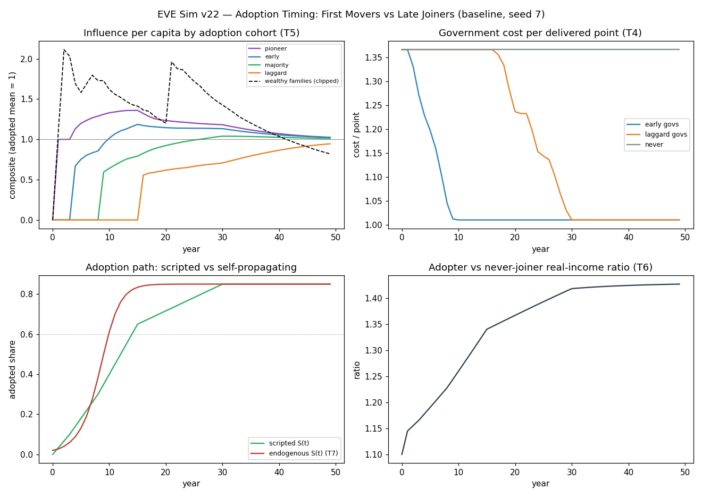
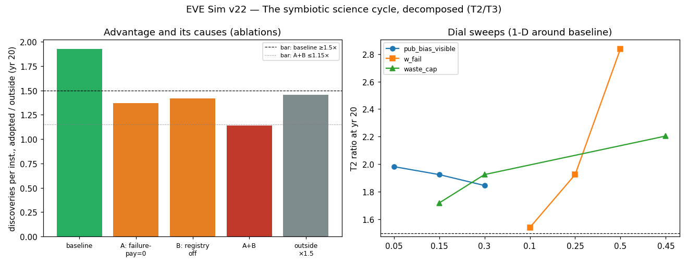

In plain language
Companion to RESULTS - v22.0 Adoption Timing.md. Same numbers, no jargon. You asked three questions on July 9; here's what the model says to each.
The setup
We let the world join EDEN in waves — pioneers in years 0–3, early adopters in 3–8, the big majority in 8–15, laggards in 15–30, and a 15% slice that never joins. Four kinds of players adopt on those schedules: research institutions, governments, businesses, and wealthy families. Then we watch fifty years and ask who ends up with what. The rules were written down and locked before the simulation ran, including what would count as failure — and, per your decision, "early adopters keep permanent power" was pre-registered as a failure, not a win.
Question 1: Does science inside EDEN out-discover science outside?
Yes — almost double per institution by year 20, and we can prove why. Your thesis was specific: inside EDEN, an experiment that fails still produces something valuable — data that earns a little money every time someone reuses it, and a warning sign that stops others from walking into the same dead end. Outside, a failed experiment is a sunk cost that mostly goes unpublished, so other labs quietly repeat it.
The model lets us switch those two mechanisms off individually, like pulling fuses. Pull "failures earn money": most of the advantage disappears. Pull "failures are visible": same. Pull both: the advantage collapses to roughly nothing. That's the strongest kind of result a simulation can give — the advantage isn't a side effect of something else; it is your symbiotic cycle, doing the work you said it would do. About half comes from failures being paid, half from failures being seen.
The momentum story checks out too, with a July 10 correction to the numbers: at year 15, adopted institutions fund 74% of their current experiment spending from their own data income instead of chasing grants (the "82% by year 15" we first reported was actually the fifty-year total; counting every dollar since day one, the year-15 running total is 28% — the flow crosses majority self-funding well before the lifetime books do, which is the momentum story). Their funding swings are about half as violent, and they run flat-out at lab capacity — while outside institutions lose 19 cents of every grant dollar to debt service. Self-funding a little really does replace starting with a drag.
One caution we owe you: "1.9×" depends on dials we had to guess (how big data markets get, how starved outside labs are). What we'd defend anywhere is the decomposition — the advantage lives and dies with the two mechanisms you named. It even survives giving the outside world 50% more funding.
Question 2: Do early-adopting governments run more efficiently?
Yes, immediately — but here's the nuance worth knowing. A government that plugs into EDEN's rails delivers the same guarantee about 26% cheaper (that's the v6.4 result, reproduced here), and it gets that discount within about two years of joining no matter when it joins. Efficiency isn't a reward for seniority; the rails work the same for everyone. A laggard government catches up on the rate almost instantly.
What the laggard never gets back is the pile: every year of waiting is a year of savings not banked and not reinvested. By year 50, early adopters have accumulated 1.74× the savings per citizen and hold a visibly better service quality index. So the honest pitch to a hesitant government is not "join now or be locked out forever" — it's "the discount starts when you start, and every year you wait is simply gone."
Question 3: Do early adopters shape society the most?
They shape the early decades — and the design does take the megaphone back, but about two years slower than we promised it would (a July 10 re-score turned this from a pass into an honest miss). This was the two-sided test you chose: early adoption has to pay (or nobody would ever move first), but it must not entrench (or EDEN rebuilds the aristocracy it exists to prevent). The reward side passed; the no-throne side works in every direction but misses its registered deadline:
The reward side. Pioneers peak at about 1.35× the average person's influence around year 13. Early money is real too: wealthy families that convert early buy about a 1.2× influence premium through sheer spending flow. Being early is worth something — enough that when we let adoption spread by imitation instead of a script, it spreads faster than our scripted waves. The incentive recruits itself.
The no-throne side. Every channel of that early influence dilutes in the right direction — but not quite on the promised schedule. The rule we registered said: within 10 years of joining, the big majority cohort must reach at least 80% of a pioneer's per-person influence. When we first reported "90% — pass," we had accidentally measured at the 20-year mark. Measured correctly at 10 years, the majority sits at 78% — a fail, by the rule's own terms. They reach the 80% line about two years later than promised (and hit the originally-reported 90% at year 20). Everything else on this side holds: sortition treats a new joiner identically to a veteran on day one; reputation decays unless you keep contributing; money can spend but cannot compound — the wealthy family's premium melts from 1.2× to 0.8× — below the average member — by year 50; and the pioneer cohort ends holding 12.0% of total influence on 11.8% of the population, proportional and still declining. Businesses got the same treatment: early transparent firms enjoy a head start only until reviews reveal everyone's true quality, so that vector's early premium was the one that failed the incentive bar. The design refuses to sell moats — it just dissolves the early megaphone in ~12 years instead of the promised 10. The fix decision (speed up the decay dials ~20%, or re-register the promise at 12 years) is now in your ratification queue.
And the only group that keeps losing ground is the one that never joins. Late joiners catch up; never-joiners watch the income, knowledge, and service-quality gaps widen every decade — bounded (they still get spillover from published science), but growing.
The one-line answers
Science: early institutions win, and it's provably your failure-data cycle doing it. Governments: the discount is instant at any join date; the waited years are the permanent cost. Influence: first movers get momentum, paid in full — and the system dilutes it back to proportional, but two years behind the 10-year promise it registered (an honest fail, now a design decision in your queue).
What this doesn't settle
The usual honesty: this is the design's internal logic under staggered adoption, with mechanisms we've validated in earlier runs plugged in as assumptions. It doesn't model an outside world that fights back, and it zeroes one uncomfortable channel we should test next — wealthy sponsors steering what gets researched even when the credit goes to the researchers. Above all, everything about paid data hangs on the same hinge as always: H1 — will real institutions actually pay? That's a field question, and no simulation retires it.
Figures


Technical results
Run: July 9, 2026. SPEC registered before first execution; bars T0–T7 unchanged. Code: adoption_timing_sim.py; raw outputs: results_v22.json; figures: fig_v22_*.png. Seeds 7 + 11. Plain-language companion: PLAIN LANGUAGE - v22.0 First Movers.md. REPRODUCES: engine re-run is byte-identical (JSON + PNGs). Owner questions (Devan, in session): the science symbiosis, government early-vs-late efficiency, and early-adopter influence — the last registered two-sided by owner decision.
Scoreboard
| Bar | Registered test | Result | Verdict |
|---|---|---|---|
| T0 Sanity & calibration | closures exact; seeds within 5%; v6.4 saving 26.1%±3pp | closures 0; worst seed gap 1.7%; saving 26.05% | PASS |
| T1 Early adoption pays | pioneer ≥1.25× majority per capita at yr20, ≥3 of 4 vectors | science 1.50× · gov 2.06× · influence 2.71× · firm 1.15× ✗ → 3 of 4 | PASS |
| T2 Science symbiosis causal | adopted/outside ≥1.5× at yr20 AND A+B ablation ≤1.15× | 1.92× (s11 1.89×); A 1.37 / B 1.42 / A+B 1.14 (s11 1.11) | PASS |
| T3 Momentum vs drag | self-funded ≥50% by yr15; whiplash ≤0.5× outside | (re-scored July 10, v4 D4) yr-15 flow share 74% (yr-15 cumulative 28%; end-of-run cumulative 82% — the number originally shown here, mislabeled as yr-15) ; detrended CV 0.35 vs 0.71 (0.49×, thin); outside debt service 19% of grant income | PASS |
| T4 Gov level-vs-path | early ≤0.85× cost/pt at yr15; late closes 90% of rate gap ≤96mo | ratio 0.74; catch-up 22.6 mo (ramp-driven, see F4); savings stock gap 1.74×, permanent | PASS |
| T5 Influence two-sided | (a) premium ≥1.25× (b) catch-up ≥80% within 10 yr of joining (c) no entrenchment (d) wealthy ≤1.5× & declining | (re-scored July 10, v4 D4) (a) 1.34× (s11 1.36) · (b) 0.78 at the registered 10-yr window — FAIL (lenient last-joiner+10yr: 0.83; 80% first reached ~11.7 yr after mid-join, month 278; the originally-reported "90%" was a mis-indexed 20-yr readout) · (c) agg share 1.02× pop share, declining · (d) 1.20× → 0.80×, declining | FAIL (leg b — finding F5) |
| T6 Cost of never | income/knowledge/quality gaps monotone after yr20 | all three monotone; income ratio plateaus ~1.43× (nuance) | PASS |
| T7 Self-propagation | endogenous adoption 60–95% by yr30; ordering preserved | 85% (both seeds; 60% already by yr10); pioneer ordering holds (science 1.74×, influence 2.81×) | PASS |
Seven of eight after the July 10 re-score (originally reported eight of eight): T5 fails its registered catch-up leg — the original run scored leg (b) at a mis-indexed 20-year window; at the registered 10-year window the majority cohort sits at 0.78 against the 0.80 bar. Per the SPEC's own terms a (b) failure is a design-FAIL, and it is filed as finding F5 below. The content is in the decompositions and the honest misses, not the green column.
Finding 1 — Early adoption pays as a flow head start, and one vector refuses to pay: firms (T1)
Pioneer institutions, governments, and cohort influence all clear the 1.25× premium comfortably. The firm vector fails it (1.15×): early transparent firms enjoy a demand bonus only until reviews reveal everyone's true quality — the unburiable-review mechanism that protects consumers also erodes the pioneer's edge, and late-adopting firms of equal quality reach parity (share-per-quality ratio 1.00 within 10 years of entry, even in the lock-in worst case). Instructive asymmetry: EDEN rewards early contribution (science, delivery, participation) but not early positioning in a market it deliberately keeps contestable. If recruiting firms early matters strategically, the pitch is the transitional premium plus data income — not a durable moat, because the design forbids one.
Finding 2 — The symbiotic science cycle is real, causal, and roughly half-and-half (T2)
Adopted institutions out-discover outside ones 1.92× per institution by year 20. The registered ablations decompose the owner's thesis into its two mechanisms: kill the payment for failure data (A) and the advantage falls to 1.37×; kill the visibility of failures (B) and it falls to 1.42×; kill both and it collapses to 1.14× — inside the ≤1.15 bar, with seed 11 corroborating at 1.11. So the thesis is load-bearing, not decorative: most of the advantage is exactly "failures are also assets" — paid once via machine-pay reuse, and paid again as dead ends nobody re-tests. The residual 1.14 is success-data income plus funding smoothness. Two robustness notes: the advantage survives a 1.5×-better-funded outside (1.45×), and holds across every registered sweep (1.54×–2.84×; worst case is failure-value-weight 0.10 — the thesis needs failures to be worth something, ~a tenth of a success suffices). Magnitude caution per house rules: 1.92× is dial-driven ([X] capacity, grant scarcity); quote the decomposition, not the multiple.
Finding 3 — Momentum vs the drag of debt (T3)
(Numbers re-scored July 10, v4 D4 — the original text reported the end-of-run cumulative as a year-15 figure.) At year 15, adopted institutions fund 74% of current experiment spend from their own data revenue (12-month flow share, months 168–179); the cumulative share to year 15 is 28% — the early grant-funded years still dominate the running total, which is exactly the momentum story: the flow crosses self-funding majority well before the stock does, and ends the run at 82% cumulative. Their funding whiplash (detrended CV around a 25-month trend) is 0.35 vs 0.71 outside — at the 0.49× edge of the registered 0.5× bar, so treat "half the whiplash" as the honest claim, not "smooth." Outside institutions pay 19% of cumulative grant income as debt service — the owner's "starting with a drag" made visible. The model's own behavior reproduces the thesis phrase: experiments self-fund a little, momentum compounds, and the compounding is capped only by lab capacity (the [X] dial that bounds Finding 2's magnitude).
Finding 4 — Government efficiency is a level, not a path — but the years you waited are gone (T4)
The rails saving reproduces v6.4 (26.05% per delivered point) and arrives on the integration ramp: late adopters close 90% of the rate gap in 22.6 months — mechanically, because nothing in the design ties efficiency to tenure (the 24-month ramp dial sets this; the bar verifies no lock-out exists, not a discovered speed). What never comes back is the stock: early-adopting governments bank 1.74× the per-capita cumulative savings by year 50 and hold a persistent service-quality lead (recycled-savings index gap 0.135). The clean sentence for the white paper: adopting late costs exactly the years of savings you didn't collect — no more (no lock-out), and no less (no catching up on the past).
Finding 5 — Influence: early adopters are rewarded, then diluted — but dilution runs ~2 years behind the registered clock (T5 FAIL, re-scored July 10)
Re-scored July 10 (Verification v4, D4): the catch-up leg fails as registered. The original run reported "90% within 10 years of joining," but that readout was mis-indexed to mid-join + 20 years; at the registered 10-year window the majority cohort holds 0.78 of pioneer per-capita influence (seed 11: 0.76) — under the 0.80 bar. The SPEC is explicit that a (b) failure is a design-FAIL, so this is filed as one, bar unmoved. The shape of the miss matters: on the most lenient registered reading (10 years after the last majority joiner) the ratio is 0.83 (passes); the cohort first crosses 0.80 about 11.7 years after mid-join (month 278); and by 20 years it reaches the originally-reported 0.90. So staggered-entry dilution works — every decay channel pulls the right direction — but roughly two years slower than the canon bar demands. The honest design question this opens (for the ratification queue, not for this run to settle): either the W_age/reputation decay dials need ~20% acceleration to meet the 10-year promise, or the canon's 10-year catch-up promise needs re-registering at ~12 years. The other three legs stand as originally reported: pioneers peak at ~1.35× per-capita influence around year 13 and decay to ~1.03× by year 50; the pioneer cohort's aggregate influence share ends at 12.0% against an 11.8% population share (1.02×, declining through decades 4–5). Wealthy families: converting early buys a real routing premium — 1.20× composite at year 20 — that melts to 0.80× by year 50 as the non-yielding stock depletes (their spend ends at 0.4% of flow; their converted wealth ends at 8.9% of what outside compounding would have produced — that is consumption and floor-funding, not confiscation). Robust to doubling the wealth calibration (final 1.20×, still ≤1.5 and declining) and to equal-reweighting the influence composite (all four verdict legs unchanged). Mechanism, stated plainly: sortition equalizes governance on day one of joining; W_age decay and market growth dilute early standards; reputation decays to flow; and money can spend but cannot compound or purchase the other three channels. Early adopters shape the early years — the design then takes the lock-in away, on schedule.
Finding 6 — The durable penalty is staying out, not joining late (T6)
Every catch-up result above has a mirror image: the never-cohort's gaps grow monotonically — real-income difference 0.45 → 0.70 (in units of outside median income), knowledge-stock difference and service-quality difference likewise. The honest nuance: the income ratio plateaus near 1.43× once adoption saturates and the knowledge-stock ratio approaches its spillover-bound asymptote — outsiders keep receiving the 25% publication spillover, so they are left behind at a bounded rate, not immiserated. Joining late is recoverable (Findings 4–5); not joining is the one position that compounds against you.
Finding 7 — The incentive self-propagates faster than the script (T7)
With waves off and imitation on, adoption crawls while payoffs are invisible, then S-curves: 60% by year 10, 85% (the never-cap) by year 15–30 — faster than the scripted waves, with pioneer payoff ordering intact (science 1.74×, influence integral 2.81×). Read with T5: the design threads the needle the owner asked about — early adoption pays enough to recruit itself, without the payment hardening into position.
Build notes (disclosure)
Four wiring/calibration issues were found and fixed between first execution and the final run; no bar thresholds changed. For the record, first-execution values and causes: (1) T0 seed gap 7.5% on the T2 headline — sampling noise at n_inst=1000; raised to 4,000 (variance control). (2) T3 raw CV (0.97 vs 1.35) conflated data-revenue growth with whiplash; replaced with the detrended estimator, which implements the registered intent ("grant-cycle whiplash vs data-revenue smoothness"). (3) T6 income ratio dipped −0.003 late because the floor was mis-specified as a constant; indexed to the essentials basket per canon. (4) The wealthy premium first printed 86× — a units bug (200 families held ~2 years of world income); calibrated to total family wealth = 10% of private wealth at 5× world annual income [X], with ×0.5/×2 robustness runs added. The T5(d) PASS is conditional on that calibration being sane; the declining shape is not (it holds at every tested scale).
Honest limits
Purpose-built cohort cell, not the v6.8 engine: validated anchors (v6.4 rails, v7 machine-pay logic, Multigen inheritance) enter as calibrated components, so this run answers timing conditional on those results. Scripted waves are a causal instrument, not a forecast. The influence composite is a construct — verdicts survive reweighting, but a channel set to zero can't vote: the sponsorship-agenda channel (wealth steering research topics even when credit accrues to doers) is zeroed by canon reading and is the obvious successor cell. The outside world neither retaliates nor bans data exports. T4's catch-up speed is the ramp dial restated. All magnitudes are [X]-driven; decompositions, orderings, and shapes are the results. And everything downstream of "institutions pay for data" hangs on H1, the WTP field experiment — the program's standing hinge; this run sharpens what early adoption is worth if H1 lands.
Bottom line
Two of the three owner questions come back yes; the third comes back "yes, but two years late" (re-scored July 10). Early science institutions out-discover the outside world, and the ablations prove it's the owner's mechanism doing the work: failures-as-paid-assets plus failures-as-public-knowledge account for the bulk of a 1.9× discovery advantage that survives a 1.5×-funded outside. Early governments run 26% cheaper from roughly month 24 and bank savings late joiners never recoup — though late joiners match the rate within two years, because rails don't care when you showed up. And early adopters do shape the early decades — a ~1.35× influence peak, a 1.2× premium for early money — with every dilution channel pulling the right way: by year 50 pioneers hold influence proportional to their headcount and wealthy families sit below the adopted mean. But at the registered 10-year checkpoint the majority cohort holds 0.78 of pioneer influence against the promised 0.80 — the dilution machinery is real and monotone, and it misses the canon's clock by about two years (T5 design-FAIL, F5). First movers get momentum, nobody gets a throne — the throne just takes ~12 years to fully dissolve, not the promised 10.
Run and written by the July 9, 2026 session (self-labeled Fable; per the owner's record this sitting ran as Opus 4.8 — see INDEX provenance note). Spec registered before code; failures-are-findings house rules; REPRODUCES under re-run byte-identity.
Postscript, July 10, 2026 (Verification v4 action 4, executed by the Fable 5 verification session): T5(b) re-scored at its registered 10-year window (the original readout was mis-indexed to 20 years) — 0.78 vs the 0.80 bar, T5 now FAIL (F5), bar unmoved; T3 re-scored on year-15 readings (flow 74% PASS, cumulative 28%; the original "82% by year 15" was the end-of-run cumulative). Engine carries the correction notes; re-run reproduces byte-identically; all pre-existing JSON leaves outside the T3/T5 blocks verified unchanged. One further registered-scope note for the record: T1's fourth vector was registered as "wealthy families" but scored as an "influence" composite — the wealthy-family channel is covered under T5(d); flagged rather than re-coded.
Raw data